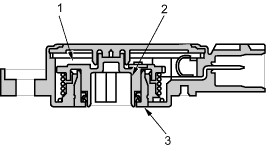
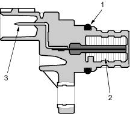

Throttle Position (TP) Sensor
The TP sensor is a potentiometer connected to the throttle valve shaft. As the throttle position changes, the sensor varies the signal voltage to the ECM. The TP sensor is not replaceable apart from the throttle body.

- ELEMENT
- BRUSH HOLDER
- BRUSH
Top Dead Centre (TDC) Sensor
The TDC sensor detects the position of the No. 1 cylinder as a reference for sequential fuel injection to each cylinder.

- O-RING
- MAGNET
- TERMINAL
Vehicle Speed Sensor (VSS)
The VSS is driven by the differential. It generates a pulsed signal from an input of 5 volts. The number of pulses per minute increases/decreases with the speed of the vehicle.